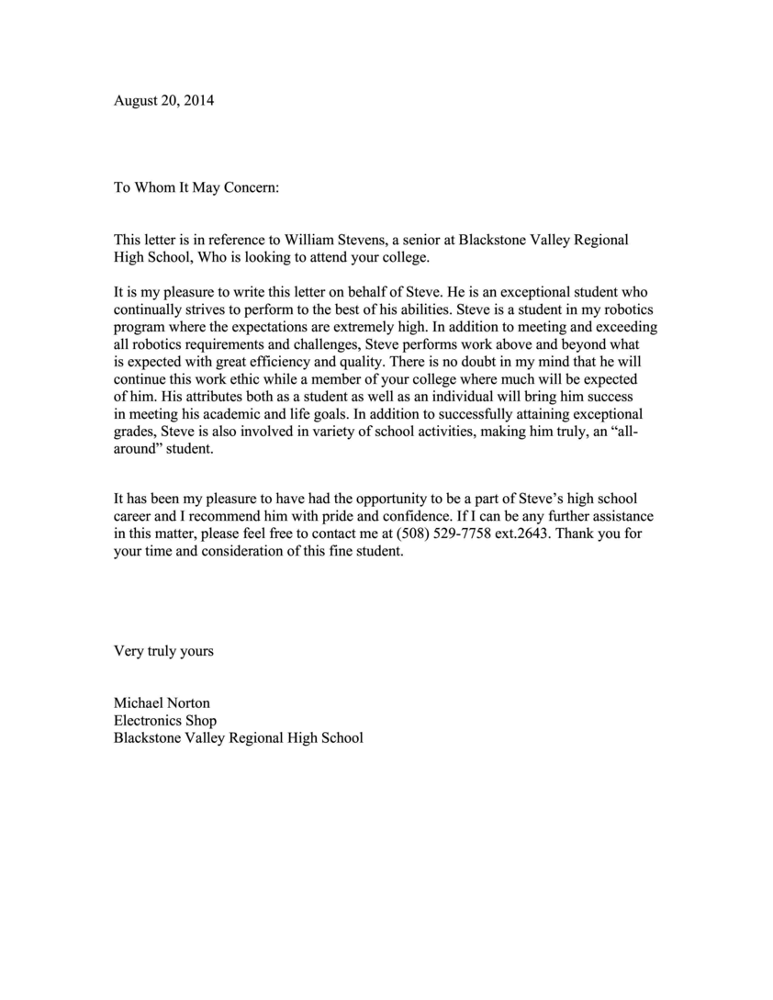
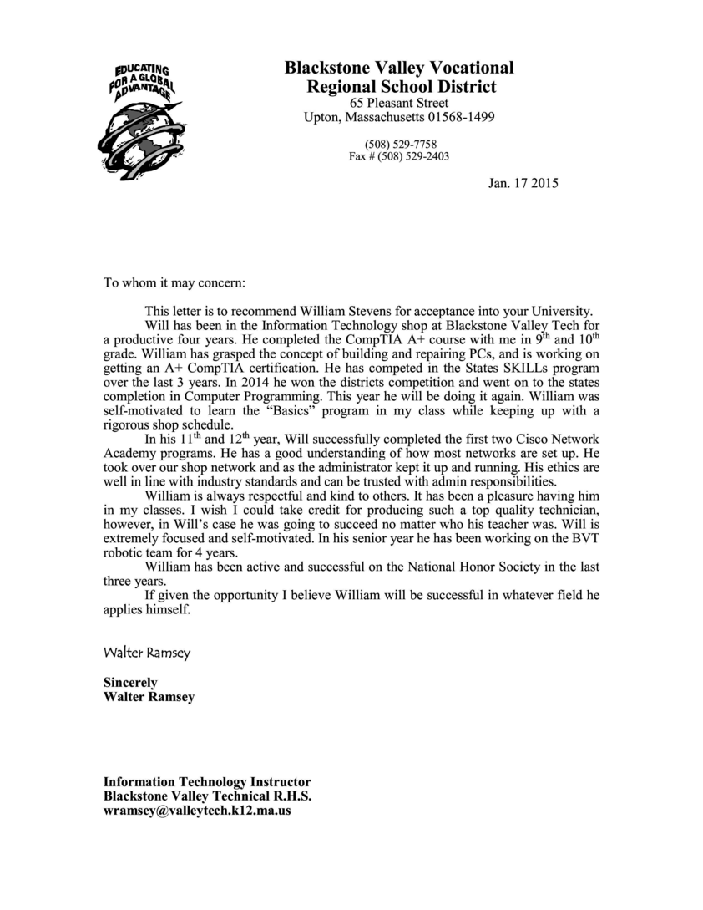
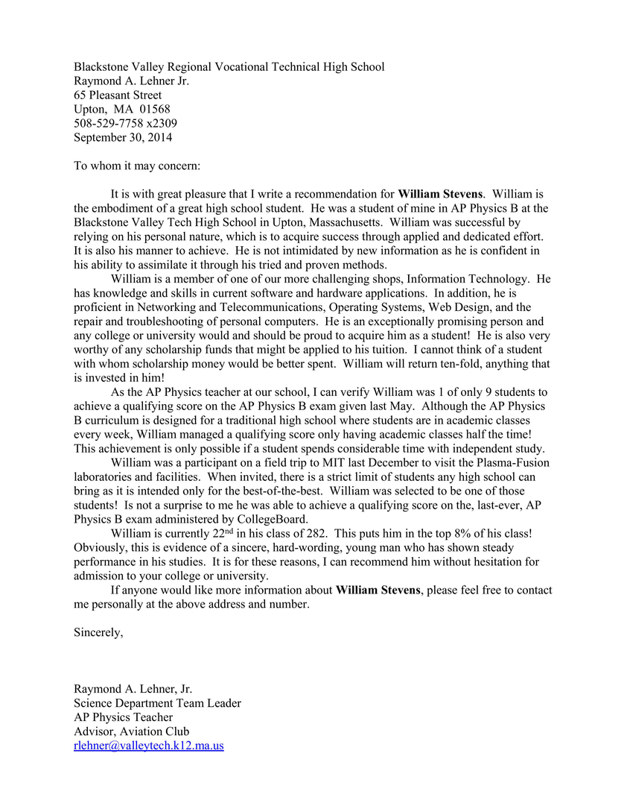

My time in FIRST Robotics has been the funnest high pressure situation of my life. Mr Norton has helped me realize that I can be put in high pressure situations and succeed.
Mr. Ramsey has had me as a student for 4 years and has helped me expand my technical knowledge, while allowing me shop time and resources to pursue my own interests in the computing field, such as computer programming, information security, and server administration.
AP Physics with Mr. Lenher was one of the most challenging classes I've taken so far, and yet it was my favorite for the exact same reason. I enjoyed working through the tough problems, while learning more about how the universe works.
